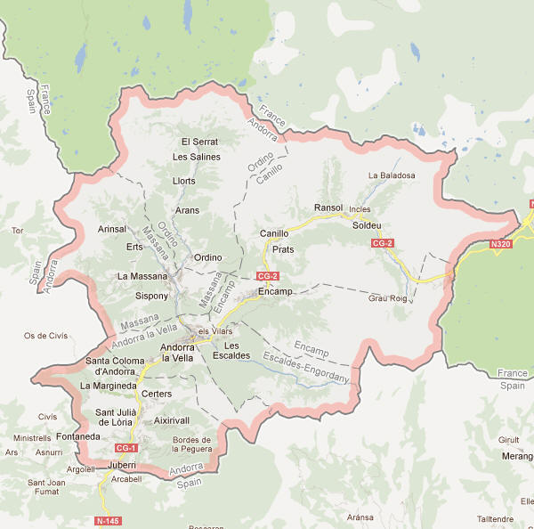
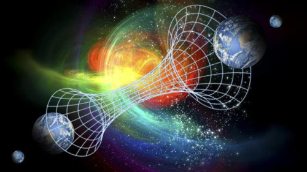

28-01-2018 | Posted by D. Dhanushka
20 වන සියවසේ විශ්මය ජනක සිදුවීම් වූයේ පියාඹන පීරිසි, අපරාධ ක්රියා හෝ පුදුම සහගත සත්ත්වයන් දුටු බවට වාර්තා නම් නොවේ. එය සිදුවූයේ කෙනෙකුට සිතේ ඇදෙන ඉතා කාර්යබහුල ස්ථානයක් වන ගුවන් තොටුපළකයි. මෙදින වන තෙක්, කිසිවෙක් එතන සිදුවූ දේ සහ සාමාන්ය ව්යාපාරික සංචාරකයෙක් නූතන ලෝකය විසින් අමතක කළ දැමූ මහා ප්රෙහේලිකාවක හදවත වෙන බව දැන සිටියේ නෑ.
1954 අවුරුද්ද ටෝකියෝවට තරමක් උණුසුම් දවසක් වුණත් Haneda ගුවන් තොටුපලේදි සාමාන්ය විදියට වැඩ කෙරුනි. ඔහුගේ මවුබස ප්රංශ වුවත් ඔහු ජපන් බස හා තවත් භාෂා කිපයක් දැන සිටි අතර ඔහුගේ වොලට්ටුවේ යුරෝපීය රටවල් ගණනාවක් මුදල් තිබුණි.ඔවුන් ඔහුගෙන් ඔහුගේ මවුබිම ගැන ඇසූ විට දේවල් පුදුමාකාර වෙන්නට විය. ඔහු අහම්බෙන් සදහන් කළේ ඔහු ආවේ ප්රංශය සහ ස්පාඤ්ඤය අතරට මායිම් වන Taured නම් රටෙන් කියා පැවසීය. නිලධාරීන් ඔහුට එවැනි රටක් නැති බව ප්රකාශ කළත්, ඔහු ඔවුනට ඔහුගේ ගුවන් ගමන් බලපත්රය ඉදිරිපත් කළේය. එය Taured නම් පැවතිය නොහැකි රටන් නිකුත් කළ එකක්. ඒ වගේම එහි ඔහුගේ අනෙකුත් ජපන් සවාරි සහ අනෙකුත් රටවල් අතර සිදු වූ ගමන් ගැන පැහැදිලිව මුද්දර ගසා තහවුරු කර තිබුණි. ඔහු හමුවෙන සමාගම ගැන විමසූ විට එම නිලධාරින් මීට පෙර කිසිදු දිනක එවැනි සමාගමක් ගැන අසා නොතිබුණි. ඔහු කාමරයක් වෙන් කර තිබූ හෝටලයේ එවැනි පුද්ගලයෙකුට කිසිදු වෙන් කීරීමක් ද සිදු කර නොතිබුණු අතර ඔහුගේ චෙක් පොතේ සදහන් වූ බැංකුව ද පැවතිය නොහැකි එකක් විය.
 Taured යැයි විශ්වාස කෙරෙන ඇනඩෝරා නම් රටේ සිතියම.
එම රැවුල්කාර මිනිසා සමච්ලයට ලක් විය. ඇත්තටම මෙය අපූරු ඔහුගේ වාසියට ප්රායෝගික විහිළුවක්. රේගු නිලධාරින් ඔහුට ලෝක සිතියමක් පෙන්වා ඔහුගේ ඇන්ඩෝරා නම් රට පෙන්වීමට සැලැස්වුවා. සමහරවිට එය ඔහුගේ ඇත්තම රට කෙසේ හෝ අත්වැරදීමකින් අමතක වීද නැත්තම් ඔහුගේ පුංචි විහිළුවක් ද? එම මිනිසා කෝපයට පත් විය. ඇන්ඩෝරාව එම සිතියමේ නැති බව කියමින් නමුත් Taured පැවතිය යුතු තැනම තිබිය යුතු බවද පැවසීය. ඔහුගේ ආඩම්බරකාර රට අවුරුදු දහස් ගණනක් පැවතී තිබුණි. ඒ වනවිටත් තමන්ගේ රට අතුරුදන් වීමේ කම්පනයෙන් සිටි එම පුදගලයාව රේගුවෙන් රදවා ගෙන ඔහුට රාත්රිය ගත කිරීමට ළගම හෝටලයක කාමරයක් ලබා දී තිබුණේ රෙගු නිලධාරින් කුමකින් කුමක් සිදුවේගෙන යන්නේ දැයි සොයාගැනීමටයි.
පසුදා උදෑසන අබිරහස තවත් ගැඹුරු විය. ලෝකයා දැනසිටි Taured හි එකම පදිංචිකරුවා, ආරක්ෂකයින් විසින් රෑ පුරා රැක සිටි ඔහුගේ හෝටල කාමරයෙන් සමුපූර්ණයෙන් අතුරුදන්විය. කාරණා තවත් නරක අතට හරවමින්, ඔහුගේ සියලුම පුද්ගලික ලියකියවිලි, අබිරහස් රටින් නිකුත් කළ ඔහුගේ ගුවන් ගමන් බලපත්රය හා රියදුරු බලපත්රය ද ආරක්ෂක කාමරයෙන් අතුරුදන් විය. පොලිසිය සහ ගුවන් තොටුපළ නිලධාරින් නිකරුණේ අබිරහස් මිනිසාව සෙවූහ. හරියටම සම්පූර්ණ මුණ ගැසීම ඇත්තටම කිසදා සිදු වුණේ නැතිනම් වගේ.
කිසිදු ලියවිල්ලක් මේ කතාව තහවුරු කරමින් නොපැවතුණත්, එය පොත්පත් කිහිපයකම සදහන් විය. (The Directory of Possibilities (1981, p. 86) and Strange But True: Mysterious and Bizarre People (1999, p. 64)).
අපට සැකයි කිසිදු නිලධාරියෙක් මේ පුද්ගලයා සහ ඔහුගේ සාක්ෂි හුදෙක් අතුරුදන් වීම ගැන වාර්තාවක් ලියන්න ඇතැයි කියා.
මේ මිනිසා සහ අනෙකුත් ස්ථානයෙන් එපිට (out of place) සංචාරකයන් පැමිණෙන්නේ තවත් මානයකින් වෙන්න පුළුවන්ද?
විශ්මයජනක ලෙස, Taured සිට පැමිණි ව්යාපරිකයා වැනි අස්ථානගත වූ සංචාරකයන් බොහෝ ස්ථාන වල පෙනීසිට තිබේ. 1851 දී ඊශාන දිග ජර්මනියෙන් තමුන් Sakria නම් මහද්වීපයේ Laxaria නම් රටෙන් පැමිණි බව කියන අරුම පුදුම පුදග්ලයෙකු හමු විය. කිසිදු අයුරකින් හදුනා ගැනීමට නොහැකි භාෂාවකින් කතා කළ තවත් තරුණයෙකුව 1905 දී පැරිසියේදී පාන් ගෙඩියක් සොරකම් කිරිමේදී අසු විය. ඔහු පැමිණියේ Lizbia හෙවත් අප දන්නා පෘතුගාලයේ Lisbon සිට යැයි නිලධාරින් සිතුවද ඔහුගේ භාෂාව පෘතුග්රීසි නොවු අතරම පෘතුගාලය ඔහුගේ මවුබිම ලෙස හදුනා ගත්තේ ද නැත.
Taured යනු වෙන කොහේ හරි ස්ථානයක්ද? Lizbia ගැන මොකද? මේ අය කාලයෙන් ආපස්සට වැටුනේද නැතිනම් මානයන් අතරින් මාරු වන අයද? නැතිනම් ඔවුන් සරලවම බොරුකාරයන් හෝ මානසික ව්යාධි සහිත වුවන්ද?
http://weekinweird.com/2014/05/20/man-without-country-mystery-man-taured/
{kind=link}